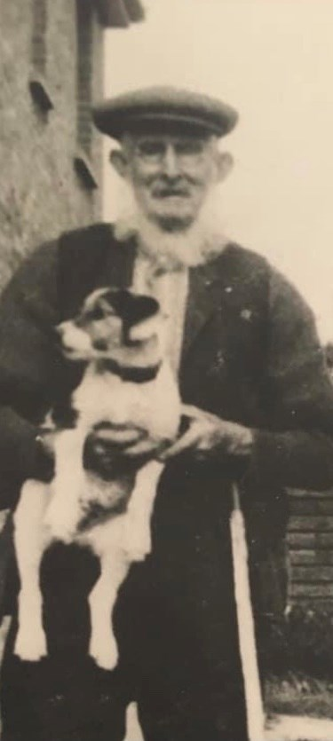

John Cowell 1858 - 1944
[ Home ] | [ Calendar ] | [ Surnames Index ] | [ Family History ]A farm waggoner and the son of Troward Cowell (an agricultural laborer) and Sarah BennettJohn Cowell, the great-grandfather of Nigel Horne, was born in Wingham, Kent, England on May 17, 18581,2,3,4,5,6,7, was baptized there at St Mary The Virgin Church on Jun 27, 1858 was married twice - to Emma Culmer (on Feb 8, 1879 in Westbere, Kent, England) Harriett Osborne (c. Nov 1899 in Thanet, Kent, England, following the death of Emma on May 7, 1889)10. He had 6 children with Emma Culmer: Charles Percy, Alfred John, George Troward, Emma Jane, Edith Eliza and James Frederick.
John spent all of his life in Kent, England. Throughout his life, he lived in several places around the county: at Stodmarsh Street, Stodmarsh on Apr 7, 186111; at Nethergone, Chislet on Apr 2, 187112; at Wayborough, Minster, Thanet on Apr 3, 188113; in Upstreet, Kent, England on Apr 5, 189114 following the death of his wife on May 7, 1889; at 2 Woodchurch Farm Cottages, Acol on Mar 31, 190115; at Woodchurch Farm, Acol on Apr 2, 191116 (when he was living with his parents); at Sandhills, Ash on Jun 19, 192118; and at 7 Pouces Cottages, Manston on Sep 29, 193917. John In 1921 he was working at Mr Quested (Farmer) at Goldstone, Ash, Kent, England.
He died on Jan 11, 1944 at New Cottages, Durlock, Minster, Thanet, Kent8,9 (cerebral hemorrhage) (unmarked grave in Minster Cemetery. Value of estate £136:12:11).
Parents
- Troward was born c. 1831
- Sarah Rebecca was born c. 1832
Children
- Charles Percy was born on Mar 9, 1879
- Alfred John was born on May 8, 1880
- George Troward was born c. Feb 1882
- Emma Jane was born c. Feb 1883
- Edith Eliza was born c. May 1884
- James Frederick was born on Mar 2, 1887
Citations
- 1861 England Census Online publication - Provo, UT, USA: The Generations Network, Inc., 2005.Original data - Census Returns of England and Wales, 1861. Kew, Surrey, England: The National Archives of the UK (TNA): Public Record Office (PRO), 1861. Data imaged from the National
- 1871 England Census Online publication - Provo, UT, USA: The Generations Network, Inc., 2004.Original data - Census Returns of England and Wales, 1871. Kew, Surrey, England: The National Archives of the UK (TNA): Public Record Office (PRO), 1871. Data imaged from the National
- 1881 England Census Online publication - Provo, UT, USA: The Generations Network, Inc., 2004. 1881 British Isles Census Index provided by The Church of Jesus Christ of Latter-day Saints © Copyright 1999 Intellectual Reserve, Inc. All rights reserved. All use is subject to the
- 1891 England Census Online publication - Provo, UT, USA: The Generations Network, Inc., 2005.Original data - Census Returns of England and Wales, 1891. Kew, Surrey, England: The National Archives of the UK (TNA): Public Record Office (PRO), 1891. Data imaged from The National
- 1901 England Census Online publication - Provo, UT, USA: The Generations Network, Inc., 2005.Original data - Census Returns of England and Wales, 1901. Kew, Surrey, England: The National Archives of the UK (TNA): Public Record Office (PRO), 1901. Data imaged from the National
- 1911 England Census Online publication - Provo, UT, USA: Ancestry.com Operations, Inc., 2011.Original data - Census Returns of England and Wales, 1911. Kew, Surrey, England: The National Archives of the UK (TNA), 1911. Data imaged from the National Archives, London, England.
- England & Wales, FreeBMD Birth Index, 1837-1915 Online publication - Provo, UT, USA: The Generations Network, Inc., 2006.Original data - General Register Office. England and Wales Civil Registration Indexes. London, England: General Register Office. © Crown copyright. Published by permission of the Cont
- England & Wales, Death Index: 1984-2005 Online publication - Provo, UT, USA: The Generations Network, Inc., 2007.Original data - General Register Office. England and Wales Civil Registration Indexes. London, England: General Register Office. © Crown copyright. Published by permission of the Cont
- England & Wales, National Probate Calendar (Index of Wills and Administrations),1861-1941 Online publication - Provo, UT, USA: Ancestry.com Operations Inc, 2010.Original data - Principal Probate Registry. Calendar of the Grants of Probate and Letters of Administration made in the Probate Registries of the High Court of Justice in England. Londo
- England & Wales, FreeBMD Marriage Index: 1837-1915 Online publication - Provo, UT, USA: The Generations Network, Inc., 2006.Original data - General Register Office. England and Wales Civil Registration Indexes. London, England: General Register Office. © Crown copyright. Published by permission of the Cont
- 1861 England, Wales & Scotland Census - Findmypast (was age 2 and the son of the head of the household)
- 1871 England, Wales & Scotland Census - Findmypast (was age 12 and the son of the head of the household)
- 1881 England, Wales & Scotland Census - Findmypast (was age 23 and the head of the household)
- 1891 England, Wales & Scotland Census - Findmypast (was age 32 and the head of the household)
- 1901 England, Wales & Scotland Census - Findmypast (was age 42 and the head of the household)
- 1911 Census for England & Wales - Findmypast (was age 52 and the head of the household)
- 1939 Register - Findmypast (was recorded at this address)
- 1921 Census Of England & Wales - Findmypast (was age 63 and the head of the household)
Notes
Blind.
Media
John Cowell - Elizabeth Culmer - Marriage Certificate
John Cowell - Elizabeth Culmer - Marriage Certificate
John Cowell - birth certificate
John Cowell - death certificate
John Cowell

John Cowell (2)
John Cowell - probate

1911 UK Centus page 1

Thanet Advertiser - 18 Jan 1944

Doctor's Book

John Cowell - 3

England & Wales deaths 1837-2007 - BMD/D/1944/1/AZ/000224/088
1939 Register Transcription - TNA-R39-1820-1820G-008-30
1939 Register Transcription - TNA-R39-1820-1820G-008-33
England & Wales births 1837-2006 - BMD/B/1858/2/BH/000415/017
1891 England, Wales & Scotland Census Transcription - GBC-1891-0005761364
1861 England, Wales & Scotland Census Transcription - GBC-1861-0003425896
Canterbury Marriage Banns - GBPRS/CANT/M/94031997/1
1939 Register Transcription - TNA-R39-1820-1820G-008-31
1939 Register Transcription - TNA-R39-1820-1820G-008-32
1901 England, Wales & Scotland Census Transcription - GBC-1901-0005520258
Kent Baptisms - GBPRS/CANT/B/96570737
England Births & Baptisms 1538-1975 - R_884740089
1921 Census of England & Wales - GBC/1921/RG15/04492/0313/01
Family Tree
Generated by ged2site. Last updated on Nov 13, 2024